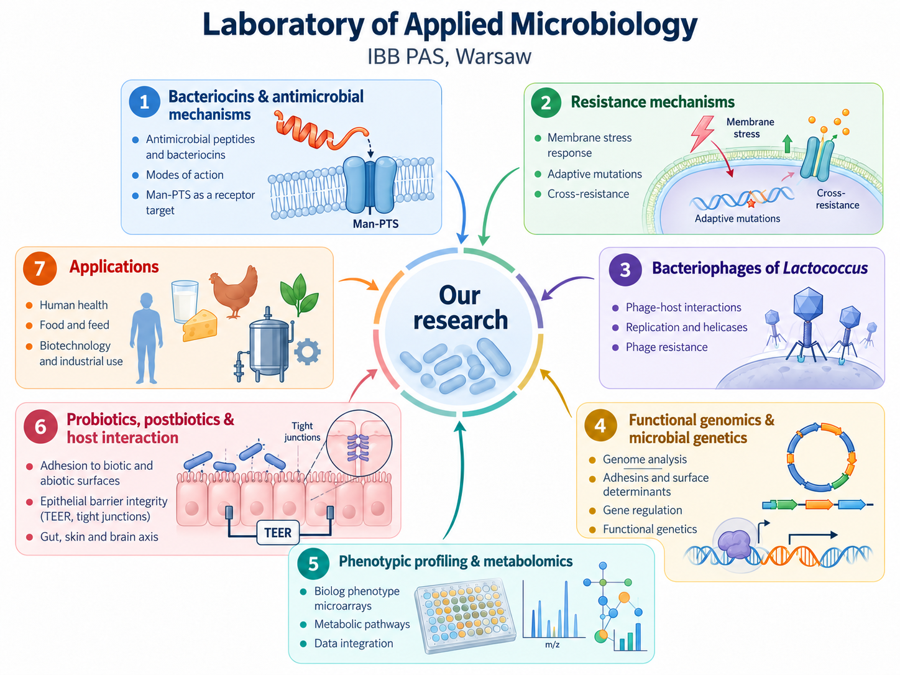

Bacteriocins & receptor recognition
Structural and functional studies of class II bacteriocins, their interactions with the Man-PTS receptor, and molecular determinants of antimicrobial specificity.
Applied microbiology · Molecular mechanisms · Biotechnology
We investigate bacteriocins and antimicrobial resistance, lactococcal bacteriophages, and the functional potential of microorganisms. Our work connects molecular genetics and protein biochemistry with phenotypic profiling, multi-omics and applied research.
Scientific directions
Our laboratory brings together complementary programmes in molecular and applied microbiology, spanning fundamental mechanisms and experimental approaches relevant to health, food and biotechnology.
Structural and functional studies of class II bacteriocins, their interactions with the Man-PTS receptor, and molecular determinants of antimicrobial specificity.
Genetic and physiological mechanisms of resistance to bacteriocins and membrane-active antibiotics, including stress-response and regulatory pathways.
Lactococcal phage biology, DNA replication proteins and helicases, and phage–host interactions relevant to dairy starter cultures.
Functional profiling of bacterial candidates, adhesion to biotic and abiotic surfaces, and epithelial barrier measurements including TEER in selected in-vitro models.
Strain-level genetic characterization, genomic determinants of function, comparative metabolic pathways and integration with targeted extracellular metabolomics.
Phenotypic profiling and collaborative R&D addressing fermentation, functional food, bioactive metabolites and the translation of research into applications.
At a glance
Seven connected themes illustrate the breadth of experimental and applied research carried out by the laboratory.

People
Two researchers with complementary expertise in the mechanisms and applications of microbial systems.
Head of laboratory · Professor of the Institute
Bacteriocins, microbial genetics, functional genomics, probiotic candidates and translational microbiology.
ORCID ↗
Researcher · PhD, DSc
Lactococcal bacteriophages, helicases, molecular biology of phage replication and dairy starter culture biology.
ORCID ↗
Selected research
A small selection of recent research spanning bacteriocins, bacteriophage proteins and microbiome-oriented applications.
Tymoszewska A., Aleksandrzak-Piekarczyk T. Subclass IId bacteriocins targeting mannose phosphotransferase system: Structural diversity and implications for receptor interaction and antimicrobial activity. PNAS Nexus. 2024;3(9):pgae381.
doi:10.1093/pnasnexus/pgae381Tymoszewska A., Steczkiewicz K., Aleksandrzak-Piekarczyk T. An atypical V-shaped garvicin C bacteriocin targets Man-PTS via domain insertion. Biophysical Journal. 2026;125(1):99–112.
doi:10.1016/j.bpj.2025.11.010Santo A., Chmielewska-Jeznach M., Steczkiewicz K., Aleksandrzak-Piekarczyk T., Szczepankowska A.K. Structural and functional insights into Gp21 as a new SF4 helicase of prolate-headed Lactococcus lactis phage 94p4. International Journal of Biological Macromolecules. 2025;320(Pt 2):145668.
doi:10.1016/j.ijbiomac.2025.145668Aleksandrzak-Piekarczyk T., Tymoszewska A., Radkiewicz M., Szczepankowska A.K., Samborowska E., Koryszewska-Bagińska A., Cukrowska B. Multi-Criterion In Vitro Profiling of Probiotic Strains for Preliminary Gut–Skin-Axis-Oriented Candidate Prioritization. Probiotics and Antimicrobial Proteins. Published online 27 October 2026.
doi:10.1007/s12602-026-11269-3Aleksandrzak-Piekarczyk T., Szczepankowska A.K., Radkiewicz M., Samborowska E., Majsiak E., Cukrowska B. Comparative genomic and extracellular metabolomic profiling of Lactiplantibacillus plantarum LP140 and Bifidobacterium breve BB010 reveals distinct gut–brain-axis-associated metabolite profiles. BMC Microbiology. Published online 30 October 2026.
doi:10.1186/s12866-026-05842-7Expertise & infrastructure
Our laboratory combines molecular microbiology, recombinant protein biochemistry, bacteriocin activity and resistance assays, functional genomics, microbial adhesion studies and phenotypic profiling.
Research infrastructure includes the Biolog OmniLog Phenotype MicroArray platform, Bioscreen C for automated growth measurements, and a CO₂ incubator for mammalian epithelial cell-line models. Selected specialized analyses, including advanced NMR, sequencing and LC–MS/MS, are performed with partners or shared facilities as appropriate.
Research & collaboration
For scientific collaborations, research partnerships or inquiries about laboratory expertise, contact the laboratory at IBB PAS, Warsaw.